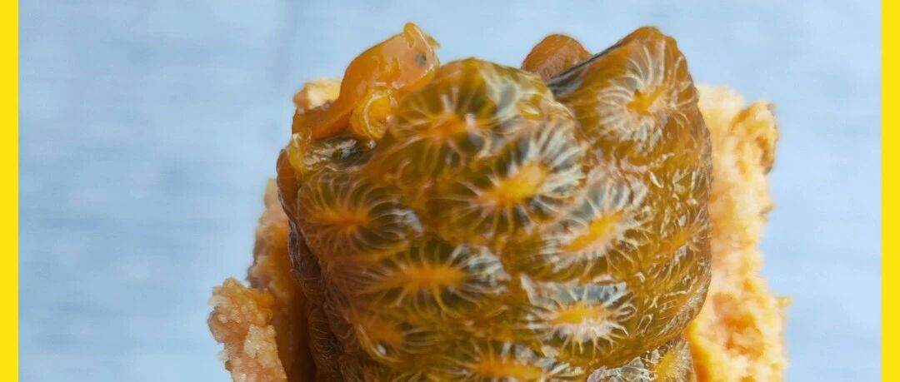

大家好，我是哥飞。
最近很多朋友加哥飞微信，都来咨询养网站防老。
大家可能看多了哥飞的文章，会以为成功很容易，赚钱很容易。
但是哥飞想告诉你，成功没那么容易。
刚好昨天在微信里回答了一个问题：
新人出海建站从找到需求做出网站到成功变现跑通闭环大概要多久？
所以今天把回答整理出来给大家分享下。
首先需要定义问题，新人到底是有多新？是全职做还是兼职做？
下面我们按照兼职做来计算，假设每天下班后都能拿出2个小时，每个周末能够拿出10个小时，一周能拿出20小时来做这件事情。
如果懂前后端，是全栈开发，那么花一周学习各种概念并同时挖掘需求。
然后花一周开发，再花一周宣传推广。
第四周开始，如果选的词的确是有需求的词，那么才有可能拿到流量。
然后还得每天有一两千访问，才能去申请Adsense广告。
到了第五周，Adsense后台能够看到收入。
也就是说，一切都正常稳定推进的情况下，在第五周能够赚到第1美元。
而如果你不是全栈开发，而是边学边做，那么这个时间还得再加一两周。
而如果你完全不懂开发，那么不建议做工具站，你直接用 Wordpress 搭建一个内容博客，那么四周左右，能够拿到正反馈，赚到第1美元。
当然，这是指第一个网站，一旦他拿到正反馈之后，第二个网站就会省去一半的时间。
另外说下，内容站很难后续通过用户付费变现。而懂编程的话，做工具站，后续潜力更大。
并且内容站，用户从搜索过来，看完了文章就会关闭页面，停留时间短。而如果是工具站，因为用户会去使用，所以停留时间会更长。
停留时间是拿到谷歌更高排名的很重要的一个因素。
因此，哥飞更推荐大家做工具站，这就要求大家有编程基础。
所以哥飞之前分享的教程，还请大家去学习一下。
养网站防老第0步：如果你没有编程基础，如果你不会前端开发，那么推荐跟着这个免费视频教程学习
好了，今天的分享就到这里了。